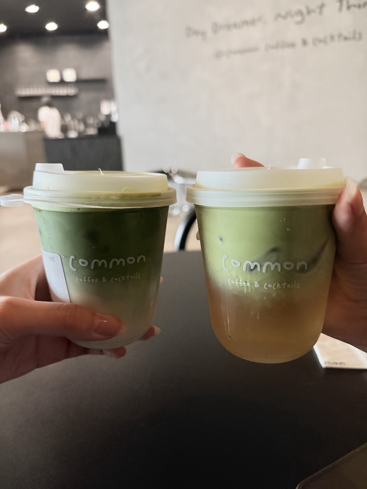
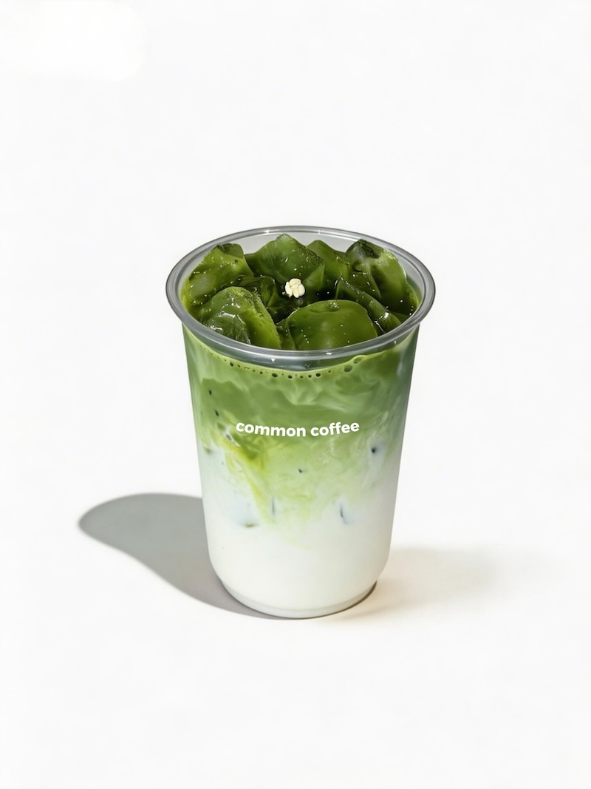
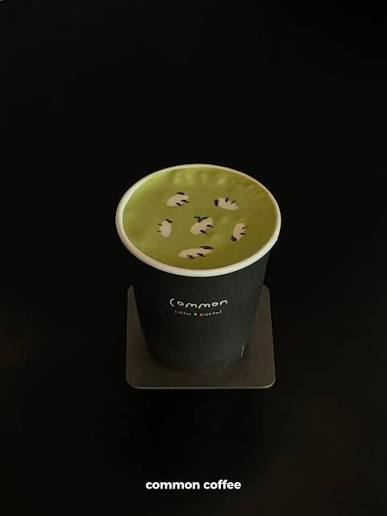

Type: ☕ Coffee
Address: 5677 Buford Hwy NE Ste 101, Doraville, GA 30340
Hours: Mon-Wed: 10AM-12AM, Fri-Sun: 11AM-1AM

I've only had the "Jasmine Matcha Latte" from here. The drink is made with matcha, floral jasmine, and Horizon whole milk. I prefer my coffee to be cold, but there is an option to get it hot.
Matcha is a finely ground green tea powder made from shade-grown tea leaves. It's known for its vibrant green color and its slightly earthy, umami-rich flavor.
The quanity as seen in the picture above is quite small which is why I wouldn't really recommend it.

Specialty: Known for their specialty drinks featuring unique appearances and flavor combinations. One notable drink that is unfortunately no longer served is the "Little Sheep Matcha Latte". The matcha drink went viral on social media with the small little fluffy sheeps drawn on top of it.
Note: They also serve sandwiches, snacks, toast and desserts. Caffeine free drinks are also available such as tea. They haven't launched their cocktail drinks yet, but they are planning to do so in the near future.
© 2026 Duluth Drinks Guide